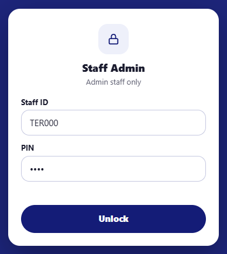
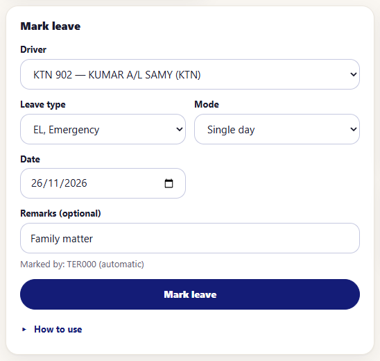
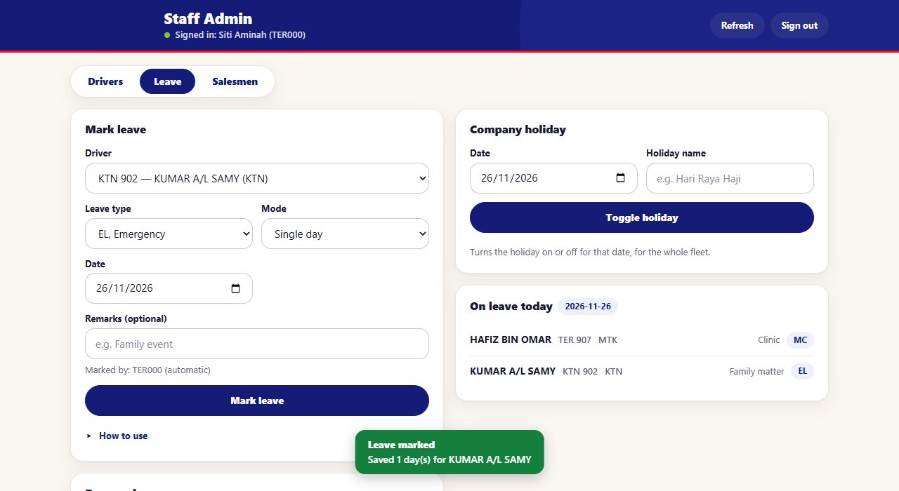
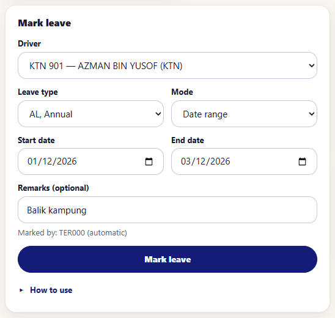
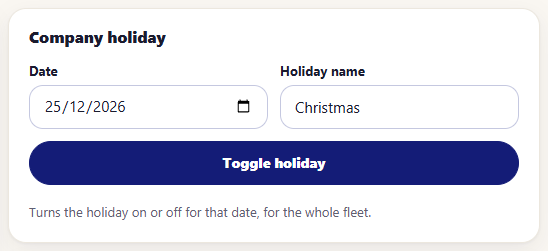
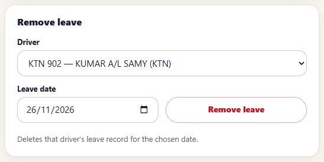
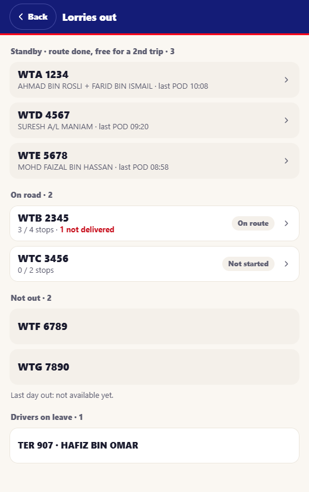

Where this tool lives: leave is recorded in
Staff Admin → Leave —
open Staff Admin.
The old stand-alone Leave page is retired; its link now opens Staff Admin on the Leave tab.
This guide was updated on 26 Nov 2026 for the new look of Staff Admin (24 Nov 2026), with pictures.
The process is unchanged — a driver tells the office, the office records it, and the dashboards
then know he is on leave.
For the office person who records driver leave. The page is in English. All pictures show sample data only.
Two branches · Dua cawangan: the driver list on this tab holds both branches. Each driver is shown as staff ID, name and branch, for example KTN 901 — AZMAN BIN YUSOF (KTN). Check the branch before you save · Senarai pemandu dalam tab ini ada dua-dua cawangan. Setiap pemandu ditunjuk sebagai ID Staf, nama dan cawangan. Semak cawangan sebelum anda simpan.
Sign in with your Staff ID and PIN and press Unlock. No PIN? Ask the office.
If you signed in on another office page on the same computer and browser, you are not asked again.

The sign-in box (sample Staff ID).
Press the Leave tab if it is not already open. The top of the page shows who is signed in.
The Leave tab (sample data).
The Leave tab has four cards:
Card
What it does
Mark leave
Record leave for one driver — a single day or a date range.
Remove leave
Delete one leave record (the driver + the exact date).
Company holiday
Turn a holiday or rest day on or off for the whole fleet.
On leave today
Read-only list of who is off today, with the leave type and the remarks.
Who can open it: your role must be LEAVE or ADMIN.
With LEAVE you see the Leave tab only; with ADMIN you also see Drivers and Salesmen.
Anyone else sees Staff Admin is restricted: ask the boss to set your role, then sign in again.
What you see when your role does not allow Staff Admin.
Why it matters: the driver tells you, you record it here, and the dashboards then show him as on
leave instead of as a driver who did not send his fuel slip (see section 5). If you do not record it, he is chased for nothing.
2. Record a driver's leave
Use the Mark leave card.
One day
Driver — pick the driver. The list shows staff ID, name and branch, so two drivers with the same first name are easy to tell apart.
Leave type — choose one of the five types in the table below.
Mode — leave it on Single day.
Date — the day off. It starts on today.
Remarks (optional) — for example the clinic name or who called in.

One day of leave, ready to save (sample driver).
Press Mark leave. A box asks you to confirm the driver, the type, the number of days and the date: read it, then press OK.
Wait for the green message Leave marked. If the date is today, the driver now appears under On leave today.

Saved: the green message at the bottom, and the driver in On leave today.
Several days in a row
Pick the Driver and the Leave type as above.
Set Mode to Date range. Two boxes appear: Start date and End date.
Set the first and the last day off.

A leave from 1 to 3 December (sample driver).
Press Mark leave. The confirm box shows the number of days and both dates. Press OK.
Wait for Leave marked. The message says how many days were saved. If some of the days were recorded before, it adds how many were "already marked": they are not saved twice.
You are recorded as the person who did it. The line Marked by: under the remarks shows
your staff ID. You cannot type another name there.
The page refuses when something is missing. A red message says what: "Select a driver",
"Pick the date", "Pick the end date" or "End date must be on or after the start date". Fix it and press
Mark leave again. Nothing is saved until you see Leave marked.
The leave types the tab offers
In the list
Meaning
AL, Annual
Annual leave
MC, Medical
Medical certificate
EL, Emergency
Emergency leave
PH, Public Holiday
Public holiday for ONE driver — for the whole company use the Company holiday card (section 3)
OTHER
Anything else — put the reason in the remarks
These five are the whole list. There is no "Unpaid" type: use OTHER and write "unpaid" in the remarks.
3. A public holiday or rest day for ALL drivers
Use the Company holiday card — not the Mark leave card. It covers the whole fleet at once,
so you do not record one entry per driver.
Date — the holiday date.
Holiday name — a short name, for example Hari Raya Haji. The page refuses an empty name ("Enter the holiday name").

A company holiday, ready to save (sample).
Press Toggle holiday. A box asks you to confirm the date and the name. Press OK.
Wait for the green message.
It is a switch. The confirm box says it: "If it is off it turns on; if it is on it turns off."
Pressing it on a date that is already a holiday turns the holiday OFF. Press once.
This tab has no list of the holidays already set, so if you are not sure whether a date is already a holiday,
ask the office before you press.
4. Delete a leave record
Use the Remove leave card when leave was entered by mistake, on the wrong date, or the driver came in after all.
Driver — pick the driver.
Leave date — the exact date of the record you want gone.

Deleting one day of leave (sample driver).
Press Remove leave. A box asks you to confirm: "The leave record for this date is deleted." Press OK.
Wait for the green message Removed. If the date was today, the driver leaves the On leave today list.
One press deletes one date. For a leave of several days, repeat for each date.
There is no edit. To change the type or the date of a leave, remove the old record and mark a new one.
5. How leave connects to the dashboards
Fleet Dashboard (new): the Lorries out card shows the number of drivers on leave today. Press the card: the names are listed under Drivers on leave.

The new dashboard lists today's leave at the bottom of Lorries out (sample data).
Classic dashboard: the list Fuel slips not in yet leaves out drivers on leave (its small print says "on-leave excluded"). On a company holiday it shows "Rest day / public holiday" instead of names.
So:
If you record a driver's leave, he drops off the chase list — no one chases a driver who is off.
If you forget, an off-duty driver keeps showing as not having sent his fuel slip, and the team may waste time chasing him.
Bottom line: record leave as soon as you know, so the chase lists stay clean.
6. If something goes wrong
What you see
What to do
The sign-in box comes back
Your session ended. Sign in again with your Staff ID and PIN, then repeat the step.
Red message Not saved, Not removed or Failed
Nothing was changed. Read the reason in the message, fix it, and press the button again.
"No connection"
The request did not go out. Check the internet and press the button again.
"No confirmation — refresh and check"
The page did not get an answer. Do not press again straight away: press Refresh (top right) and look at On leave today, or ask the office to check the record, then repeat only if it is missing.
The driver list says "Could not load drivers — Refresh"
Press Refresh at the top right.
Staff Admin is restricted
Your role does not allow this page. Ask the boss.
Tips — Do's and Don'ts
Do
Do record leave as soon as you know about it (section 5).
Do read the confirm box carefully — it states the driver, the leave type, the number of days and the date(s).
Do use the staff ID and the branch shown in the list to pick the right person when two drivers share a name.
Do wait for the green message before you assume the leave was saved.
Do use the Company holiday card (not Mark leave) for rest days and public holidays that cover everyone.
Do press Sign out when you leave a shared computer.
Don't
Don't press Toggle holiday twice on the same date — the second press turns the holiday off.
Don't look for an edit button — remove the wrong record (section 4) and mark the right one.
Don't ignore a red message; nothing is saved until the green one appears.
Don't share your PIN. Every record carries the staff ID of the person who was signed in.